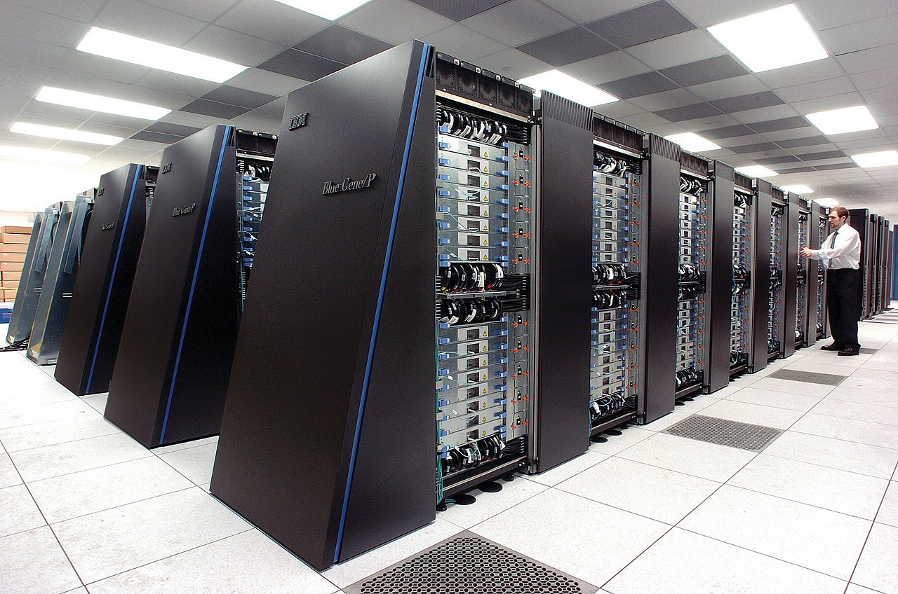

La arquitectura Cliente-Servidor

Para poder entender la estructura tenemos que saber como esta estructurada, por supuesto que si.
Los Actores
El Cliente:
Es aquel que hace peticiones al servidor. Puede ser un navegador tal como Firefox, Google Chrome o Safari; una aplicacion en tu computadora o un juego online.
El Servidor:

Es una maquina (o un conjunto de estas) generalmente de gran capacidad que siempre esta y estara encendida (exepto en mantenimiento, claro), esperando solicitudes generadas por los clientes conectados a estas maquinas. Su rol es gestionar recursos, procesar datos y solicitudes y enviar una respuesta valida siempre que sea posible.
¿Cual es el ciclo de esta estructura?
Este ciclo consiste en tres pasos.
- Peticion (Request)
- Procesamiento
- Respuesta (Response)
El cliente envía un mensaje al servidor solicitando un servicio o recurso. Por ejemplo, cuando abres YouTube para ver el apartado "Para Tí".
El servidor recibe la peticion, chequea quien eres, busca y procesa su base de datos para preparar una respuesta. Por ejemplo, antes de que YouTube te muestre el apartado "Para Tí", corre una red neuronal usando como datos tu historial de visualizacion para poder asi adivinar que video quieres ver.
El servidor envia la respuesta de la peticion. Si todo sale bien, veras la vista previa de los videos de tus canales favoritos. si no, puede que no veas los videos que quieres ver. En otros casos, el servidor suele decirte que ha pasado, como mostrarte el clasico error 404, o sea, que el no logro encontran el archivo especificado.
Caracteristicas
- Centracizacion
- Escalabilidad
- Independencia
Los datos y gestion suelen estar del lado del servidor, lo cual facilita el control y seguridad de este.
Puedes añadir mas clientes comodamente, o hacer un servidor mas capaz si hay mucha demanda.
El cliente y servidor pueden estar en plataformas distintas. O sea, un cliente IPhone puede pedir datos a un servidor con un sistema BSD.
Ventajas y Desventajas
Ventajas
Hace la actualizacion de datos mas facil (solo cambias de servidor, todos los clientes veran lo mismo) y permite que dispositivos de poca potencia accedan a procesamiento complejos que se realizan en la nube.
Desventajas
Si el servidor deja de funcionar, todos los clientes conectados no podran acceder al servidor. Ademas, si hay demasiados clientes al mismo tiempo, el servidor se puede congestionar.